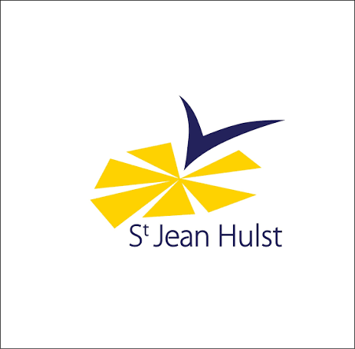
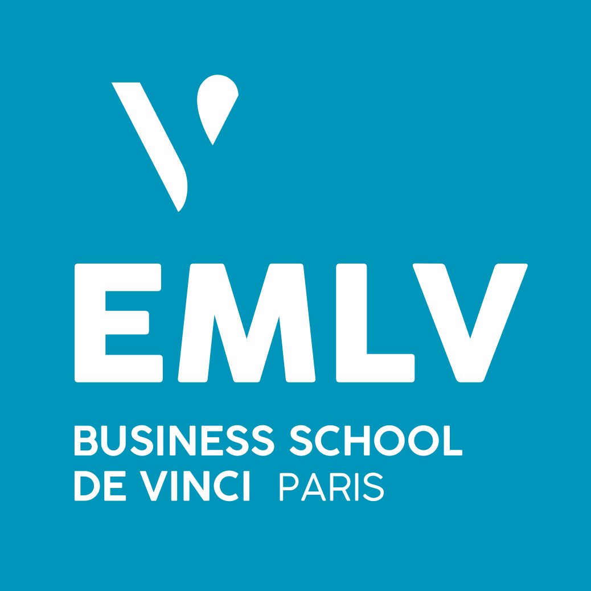
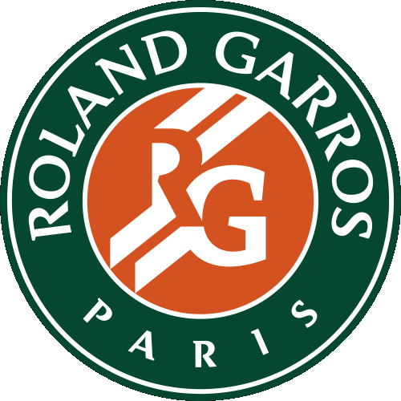
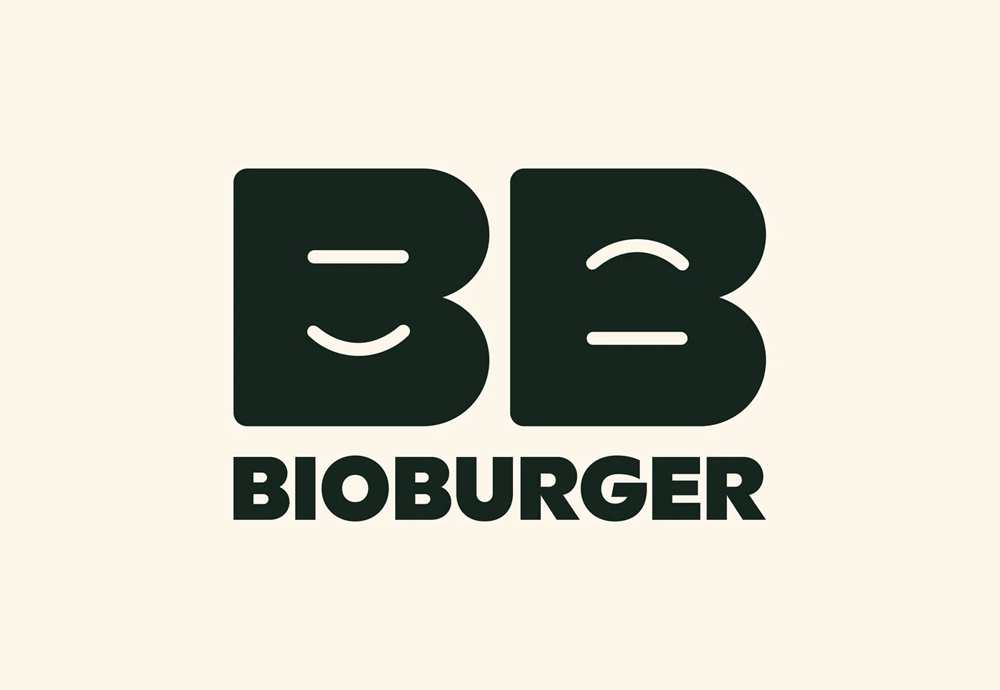

Actuellement étudiant en 4e année du Programme Grande École à l'IESEG School of Management, ainsi qu'en contrat d'apprentissage chez MBDA. Ce site a pour objectif de me présenter, de me faire connaître plus en profondeur, de partager mes expériences et mes voyages, la façon dont je les interprète, ainsi que mes intérêts pour la finance et l'investissement.
↓ Télécharger mon CV (français)| Date de naissance | 27.07.2004 |
|---|---|
| Lieu de naissance | Versailles |
| Nationalité | Française |
| Taille | 1,85 m |
| martin.lebigre@gmail.com | |
| Téléphone | +33 6 50 68 38 58 |

Saint-Jean-Hulst 2010 – 2023 Primaire, collège et lycée à Versailles, du CP à la Terminale (2010-2023). Baccalauréat, spécialités Mathématiques & Économie, option Anglais européen, mention. →
EMLV 2023 – 2026 Programme Grande École à Paris La Défense (2023-2026), triple accréditation EFMD, AMBA, AACSB : marketing, finance, ressources humaines, comptabilité, fiscalité, droit, management, commerce international. →
Mahola, Roland-Garros Hôte d'accueil pendant le tournoi, saisons 2025 et 2026 : rythme soutenu, exigence du détail, gestion des pics d'affluence. →
Bio Burger, Versailles Cuisinier de septembre 2024 à avril 2025 : service rapide, sens du client, esprit d'équipe. →Un portefeuille personnel construit en investissant le même montant chaque mois (méthode dite du DCA), sans essayer de deviner le bon moment pour acheter, avec un horizon long de 10 ans et plus : uniquement des ETF, répartis entre un PEA et un CTO (deux enveloppes pour investir en Bourse, aux règles fiscales différentes). Pas de choix de titres au cas par cas, pas d'emprunt pour investir plus que ce que je possède : la stratégie reste volontairement simple et diversifiée. Une réflexion est en cours sur l'investissement locatif immobilier, en complément.
Ce dossier réunit une explication détaillée, classée par thématique (S&P 500, Monde, Europe, zone euro, France, immobilier, émergents...), des 23 ETF qui composent ma bibliothèque : indices répliqués, pays, secteurs, principales positions et performance sur longue durée.
→ Voir mes 23 ETF en détail